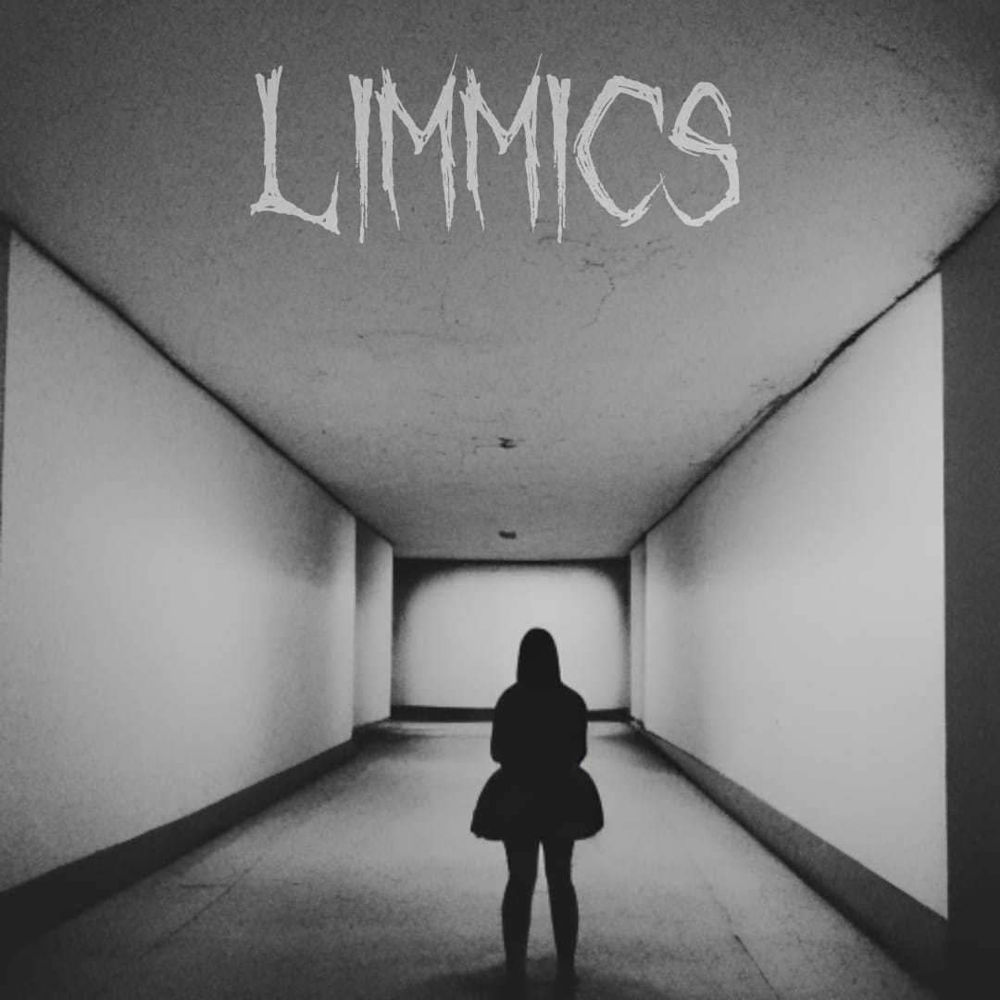

<div class="bengin-start">
    <div class="content-image-logo">
        
    </div>
    <div class="content-image-bengin">
        <div class="image-game-bengin">
            
            
        </div>
        <div class="image-game-bengin">
            
            
        </div>
    </div>
</div>
<div class="bengin-end">
    <div class="text-bengin">
        <label for="">A ferramenta "Bengin" representa um avanço revolucionário no campo do desenvolvimento de sites e jogos. Este software inovador opera completamente offline, eliminando a necessidade de conexão com a internet. Utilizando tecnologias de inteligência artificial (IA), o Bengin permite que os usuários transformem suas ideias em realidade com facilidade e eficiência. Por meio de uma interface intuitiva, os usuários podem fornecer conceitos e diretrizes básicas, enquanto o programa utiliza algoritmos avançados de IA para gerar o código e os elementos necessários para criar o jogo ou site desejado.</label>
    </div>
    <div class="options-bengin">
        <p>Windows</p>
        <button>DOWNLOAD</button>
        <p>MacOs</p>
        <button>DOWNLOAD</button>
        <p>Linux</p>
        <button>DOWNLOAD</button>
    </div>
</div>